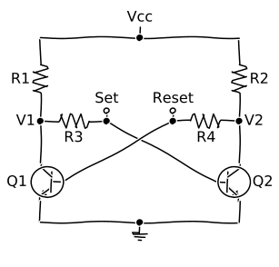

This example demonstrates grouping elements into a unit. Each SMU is grouped into a unit which is then placed where needed.


Shows creation of elements within for loop, angled elements with automatic label positioning, and colors.


Internal schematic of a 741 IC.

Turn on Matplotlib's XKCD mode for some hand-drawn looks!

